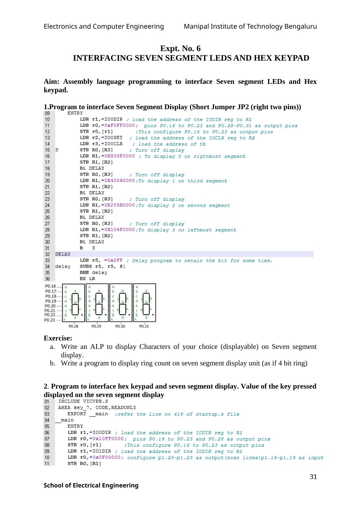

The supplied text ends the instruction comment on the IO0CLR line mid-sentence; it is retained as supplied.
INCLUDE VICVPB.S
AREA key_7, CODE,READONLY
EXPORT __main ;refer the line no 416 of startup.s file
__main
ENTRY
LDR r1,=IO0DIR ; load the address of the IODIR reg to R1
LDR r0,=0x10FF0000; pins P0.16 to P0.23 and P0.28 as output pins
STR r0,[r1] ;This configure P0.16 to P0.23 as output pins
LDR r1,=IO1DIR ; load the address of the IODIR reg to R1
LDR r0,=0x0F00000; configure p1.20-p1.23 as output(scan lines)p1.16-p1.19 as input
STR R0,[R1]
LDR R1,=IO1PIN
LDR R2,=IO0PIN
LDR R4,=IO1CLR
BK1 LDR r0,=0x0F00000
STR R0,[R4]; CLEAR SCAN LINES TO CHECK THAT NO KEYS ARE RELEASED
LDR R5,[R1]; READ FROM KEYBOARD
AND R5,R5,#0X0F0000; RETAIN ONLY RETURN VALUE
CMP R5,#0XF0000 ; IF KEY STILL PRESSED, THEN R5 NOT EQUAL TO 0XF0000
BNE BK1 ; CHECK TILL KEYS ARE RELEASED
BK2 BL DELAY ; WAIT FOR SOME TIME
LDR R5,[R1] ;READ FROM KEYBOARD
AND R5,R5,#0XF0000; RETAIN ONLY RETURN VALUE
CMP R5,#0XF0000 ;IF KEY PRESSED, THEN R5 NOT EQUAL TO 0XF0000
BEQ BK2 ; IF KEY IS NOT PRESSED THE GO BACK TO BK2
BL DELAY
LDR R5,[R1] ;READ INPUT
AND R5,R5,#0XF0000; RETAIN ONLY RETURN VALUE
CMP R5,#0XF0000
BEQ BK2 ; CHECK AGAIN FOR KEY PRESSED
LDR R0,=0XE00000; NOW APPLY 0 ONLY T0 ROW0 THROUGH P1.20
STR R0,[R1]
LDR R5,[R1] ;READ FROM RETURN LINES
AND R5,R5,#0XF0000; RETAIN ONLY RETURN VALUE
CMP R5,#0XF0000 ; CHECK WHETHER KEY FOR CORRESPONDING ROW0 IS PRESSED OR NOT
BNE ROW0
LDR R0,=0XD00000;NOW APPLY 0 ONLY T0 ROW1 THROUGH P1.21
STR R0,[R1]
LDR R5,[R1] ;READ FROM RETURN LINES
AND R5,R5,#0XF0000; RETAIN ONLY RETURN VALUE
CMP R5,#0XF0000 ;CHECK WHETHER KEY FOR CORRESPONDING ROW0 IS PRESSED OR NOT
BNE ROW1
LDR R0,=0XB00000;NOW APPLY 0 ONLY T0 ROW1 THROUGH P1.22
STR R0,[R1]
LDR R5,[R1]
AND R5,R5,#0XF0000; RETAIN ONLY RETURN VALUE
CMP R5,#0XF0000
BNE ROW2
LDR R0,=0X700000;NOW APPLY 0 ONLY T0 ROW1 THROUGH P1.23
STR R0,[R1]
LDR R5,[R1]
AND R5,R5,#0XF0000; RETAIN ONLY RETURN VALUE
CMP R5,#0XF0000
BNE ROW3
B BK2
ROW0 LDR R6,=SEG_CODE0; STARTING ADDRESS SEVEN SEGMENT CODE FOR ROW0
B FIND
ROW1 LDR R6,=SEG_CODE1;STARTING ADDRESS SEVEN SEGMENT CODE FOR ROW1
B FIND
ROW2 LDR R6,=SEG_CODE2 ;STARTING ADDRESS SEVEN SEGMENT CODE FOR ROW3
B FIND
ROW3 LDR R6,=SEG_CODE3;STARTING ADDRESS SEVEN SEGMENT CODE FOR ROW0
FIND MOV R8,#16 ;SHIFTIN TO LEFT TO CHECK FOR CARRY FLAG
NXT MOVS R7,R5,LSL R8
BCC MATCH ; CHECK TILL CARRY FLAG CLEAR
SUB R8,R8,#1 ; FOR NEXT BIT SHIFT
ADD R6,R6,#1 ; TO POINT TO NEXT MEMORY LOCATION IN THE SAME ROW
B NXT
MATCH LDR R0,=0X10000000; SELECT AEGMENT FOR DISPLAY
LDRB R9,[R6] ; FETCH CODE FOR KEY PRESSED
MOV R9,R9,LSL#16 ; SHIFT TO FIT INTO P0.16-P0.23
ORR R9,R9,R0 ;RETAIN BOTH SEGMENT SELSCTION AND CODE
STR R9,[R2] ; SEND TO PORT0 TO DISPLAY
B BK1
DELAY ;subroutine
LDR R10,=0x2ff
up SUBS R10,R10,#1;
BNE up
BX LR
SEG_CODE0 DCB 0X3F,0X06,0X5B,0X4F
SEG_CODE1 DCB 0X66,0X6D,0X7D,0X07
SEG_CODE2 DCB 0X7F,0X6F,0X77,0X7C
SEG_CODE3 DCB 0X39,0X5E,0X79,0X71
END
================================================================
EXP 7 : INTERFACING EXTERNAL DAC AND PROGRAMMING INTERNAL DAC AND ADC
================================================================Original manual image(s)
